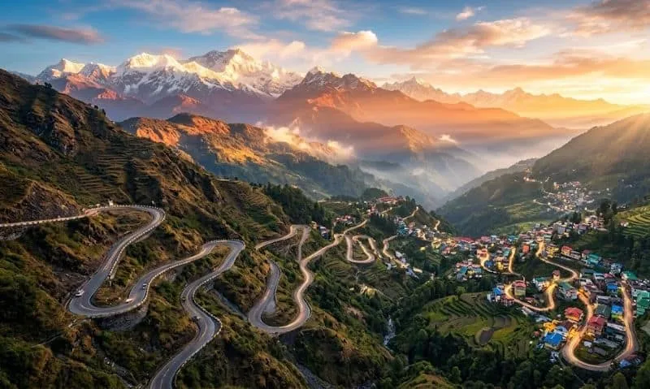
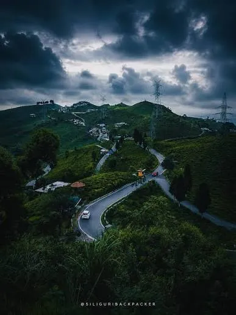

Sikkim & Darjeeling · −19%
SIKKIM-DARJEELING(via Zuluk) 4N-5D
Zuluk – Silk Route Advanture & Himalayan Views
Overview
Experience an unforgettable 4 Nights & 5 Days Himalayan journey covering the scenic destinations of Zuluk, Namchi and Darjeeling. Begin your tour from NJP Railway Station or Bagdogra Airport and travel towards Zuluk through the historic Silk Route, enjoying spectacular mountain landscapes, winding roads and beautiful Himalayan valleys. Explore the breathtaking surroundings of Zuluk, with highlights such as Thambi View Point, Lungthung and Nathang Valley, offering magnificent views of the Eastern Himalayas and, on clear days, stunning sunrise views of Kanchenjunga. Continue your journey to Namchi, a peaceful destination in South Sikkim, where you can visit the impressive Samdruptse Hill and Siddhesvara Dham (Char Dham) while enjoying panoramic views of the surrounding mountains and valleys. The journey then continues to Darjeeling, one of the most famous hill stations in the Eastern Himalayas, with a scenic route through lush tea gardens and mountain landscapes. During your stay, experience the magical Tiger Hill sunrise, visit Ghoom Monastery and Batasia Loop, explore the famous tea gardens and enjoy the charming atmosphere of Chowrasta and Mall Road. This carefully planned tour combines the adventure of the Silk Route, the spiritual and scenic beauty of Namchi, and the timeless charm of Darjeeling, making it an ideal holiday for families, couples, nature lovers and travellers seeking a perfect blend of mountains, culture, sightseeing, adventure and relaxation.
Journey highlights
- Old Silk Route Drive
- Thambi View Point
- Lungthung & Nathang Valley Kanchenjunga Sunrise Views
- Samdruptse Hill Siddhesvara Dham (Char Dham)
- Mountain & Valley Views Tiger Hill Sunrise
- Ghoom Monastery
- Batasia Loop
- Tea Garden Visit Himalayan Mountaineering Institute
- Mall Road & Chowrasta
Day by day
The itinerary
-
Day 1
Arrival at NJP/IXB – Transfer to Zuluk
Arrive at NJP Railway Station or Bagdogra Airport (IXB) and meet our representative. Begin your scenic journey towards Zuluk through the historic Old Silk Route. Enjoy the breathtaking mountain landscapes, winding roads, lush valleys and spectacular Himalayan scenery along the way. On arrival at Zuluk, check in to your hotel/homestay and relax. If time permits, enjoy the peaceful surroundings and beautiful mountain views.
ZulukThambi View PointLungthungNathang ValleyHimalayan ViewsKanchenjunga ViewsSilk RouteScenic Drive
-
Day 2
ZULUK SIGHTSEEING → TRANSFER TO NAMCHI
Start your morning with the spectacular Himalayan scenery around Zuluk. After breakfast, explore the beautiful Silk Route region with visits to Thambi View Point, Lungthung and Nathang Valley, offering panoramic views of the Eastern Himalayas and, on clear days, magnificent views of Kanchenjunga. Later, proceed towards Namchi through scenic mountain roads. On arrival, check in to the hotel and relax.
ZulukThambi View PointLungthungNathang ValleyHimalayan ViewsKanchenjunga ViewsSilk RouteScenic Drive
-
Day 3
NAMCHI SIGHTSEEN TO DARJEELING DROP
Samdruptse Hill and Siddhesvara Dham (Char Dham). Enjoy the peaceful atmosphere, impressive Shiva statue and panoramic views of the surrounding hills and valleys. Later, proceed towards Darjeeling through beautiful mountain roads and lush tea-growing landscapes. On arrival, check in to your hotel and enjoy the evening at leisure around Chowrasta and Mall Road
Samdruptse HillSiddhesvara Dham/Char DhamGiant Shiva StatueHimalayan Valley ViewsTea GardensScenic DriveChowrastaMall Road
-
Day 4
DARJEELING FULL-DAY SIGHTSEEING
Begin your day early with a visit to Tiger Hill to witness the spectacular sunrise over the Himalayan ranges and, subject to weather conditions, the magnificent Kanchenjunga. Return via Ghoom Monastery and Batasia Loop. After breakfast, continue Darjeeling sightseeing with visits to the Darjeeling Tea Garden, Himalayan Mountaineering Institute, Padmaja Naidu Himalayan Zoological Park and Tenzing Rock. Later, enjoy free time at Chowrasta and Mall Road for shopping and leisure.
Tiger Hill SunriseKanchenjunga ViewsGhoom MonasteryBatasia LoopDarjeeling Tea GardenHimalayan Mountaineering InstituteZoological ParkTenzing RockChowrastaMall Road
-
Day 5
DARJEELING → NJP/IXB DEPARTURE
After breakfast, check out from the hotel and proceed towards NJP Railway Station or Bagdogra Airport (IXB). Enjoy the final views of the beautiful Himalayan foothills and tea gardens during your journey. On arrival, you will be dropped at the railway station or airport for your onward journey, marking the end of your memorable Sikkim–Darjeeling via Zuluk tour.
Hotel Check-outScenic Mountain DriveTea Garden ViewsHimalayan FoothillsPhotographyNJP/IXB Drop-off
Included
- Reserved vehicle for Transfer & Sightseeing.
- All sightseeing as per the Tour Itinerary.
- Nights stay in Hotel
- Accommodation in Hotel What's Excluded
- Any personal expenses.
- All Taxes and Permits etc. for Darjeeling Sikkim & Bhutan.
- Any other not mentioned in includes Para
Not included
- Any personal expenses.
- All Taxes and Permits etc. for Darjeeling Sikkim & Bhutan.
- Any other not mentioned in includes Para
Gallery
Scenes from the route





Reserve this journey